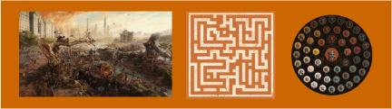

The monument game is just the beginning. An incentive to start a ritual of self exploration. Tied in a society of morphed human virtues, an attempt in rekindling the human instinct to search for the meaning of life. The Luci story goes either way from I to IX and backwards. Hidden in the Luci chapters are deception and guidance to wander up or down, looking for material/immaterial things. The game lets the players who pay attention to get near the fire. Council members are sacrificed until the council is occupied only with believers.

The art has several dimensions baked into it. Time dimension - art is made up like a wormhole with `Eden` as singularity(center of image) and `Present modern life` at the brim of hole(edges of image). The game is to jump into the portal from any side and get yourself teleported into different emotional dimension.
Emotional dimension - Various depictions of emotions portrayed in the art like love, fear, pain, hope, devotion, etc which are relatable to every human.
Econimical dimension - Stepping back from the art is the dimension of real life greed - the competition for 3 skulls baked into the contract. A psychological game to find the true believers in the artist and continue to grow a cohesive, trustable tribe gradually.
The fact that only 256 observations being recorded, lets the council to go through each response. As more trusted believers come into ecosystem, the next expansion can be bigger. This ultimately drives value from the center(fire) inside out.